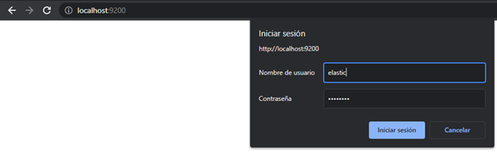
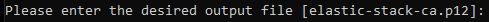
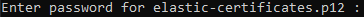

Implementación de seguridad
Cuando se Elasticsearch se utiliza para pruebas de desarrollo puede funcionar sin tener ningún tipo de seguridad, sin embargo cuando se tiene un despliegue en producción será necesario agregar capas de seguridad.
Seguridad mínima
Cuando se usa una licencia básica, las características de seguridad están deshabilitadas por defecto. Para habilitarlo realizar lo siguiente en cada nodo:
-
Detener el servicio de Elasticsearch (si está corriendo), y se agregar el parametro
xpack.security.enabled: trueen el archivoelasticsearch.yml -
Iniciar el servicio de Elasticsearch
-
Crear una Keystore para elastic
./bin/elasticsearch-keystore create -p -
Se genera una contraseña para los built-in users de elastic, en otra terminal correr el comando
./bin/elasticsearch-setup-passwords interactive -
Introducir la contraseña para cada usuario que se pida
-
Ahora cada comunicación con Elasticsearch requerirá de credenciales: 
En este punto sólo se ha configurado la seguridad minima, como el cluster cuenta con más de un nodo se debe configurar el Transport Layer Security (TLS), de lo contrario el servicio no podrá iniciarse.
Transport Layer Security (TLS)
El TLS maneja toda la comunicación interna entre los nodos del cluster, configurarlo previene que nodos no autorizados y/o maliciosos tengan comunicación con nuestro cluster.
Crear Certificate Authority (CA)
En Elasticsearch los nodos usan certificados para identificarse así mismos cuando se comunican con otros nodos. El cluster debe validar la autenticidad de estos certificados, la forma recomendada es utilizando un Certificate Authority (CA), cuando un nodo es añadido al cluster debe usar un certificado firmado por el mismo CA.
-
Generar un Certificate Authority (CA)
./bin/elasticsearch-certutil ca -
El nombre por default es
elastic-stack-ca.p12, se puede sobreescribir si se requiere, de lo contrario introducirEnter -
Introducir el password a utilizar
-
Copiar en cada nodo el certificado en la dirección
C:\Program Files\elasticsearch-7.16.1\config\ -
Ahora se genera un certificado y llave privada para los nodos del cluster
./bin/elasticsearch-certutil cert --ca elastic-stack-ca.p12 -
Introducir la contraseña que se utilizó en el CA de los pasos anteriores
-
Renombrar si se desea, de lo contrario introducir
Enter -
Introducir password a usar para el certificado: 
-
Se indicará la dirección donde fueron creados los archivos
-
Ubicar los certificados en la carpeta de configuración:
-
Copiar los archivos y copiarlos en la misma dirección en cada nodo.
Encriptar la comunicación intra-nodo con TLS
Una vez generado los certificados, se habilita la configuración TLS. Realizar los siguientes pasos para cada nodo.
-
En el archivo elasticsearch.yml agregar las siguientes líneas:
xpack.security.transport.ssl.enabled: truexpack.security.transport.ssl.verification_mode: certificatexpack.security.transport.ssl.client_authentication: requiredxpack.security.transport.ssl.keystore.path: elastic-certificates.p12xpack.security.transport.ssl.truststore.path: elastic-certificates.p12 -
Agregar el password a la keystore:
./bin/elasticsearch-keystore add xpack.security.transport.ssl.keystore.secure_password
./bin/elasticsearch-keystore add xpack.security.transport.ssl.truststore.secure_password
- Reiniciar el servicio de Elasticsearch.